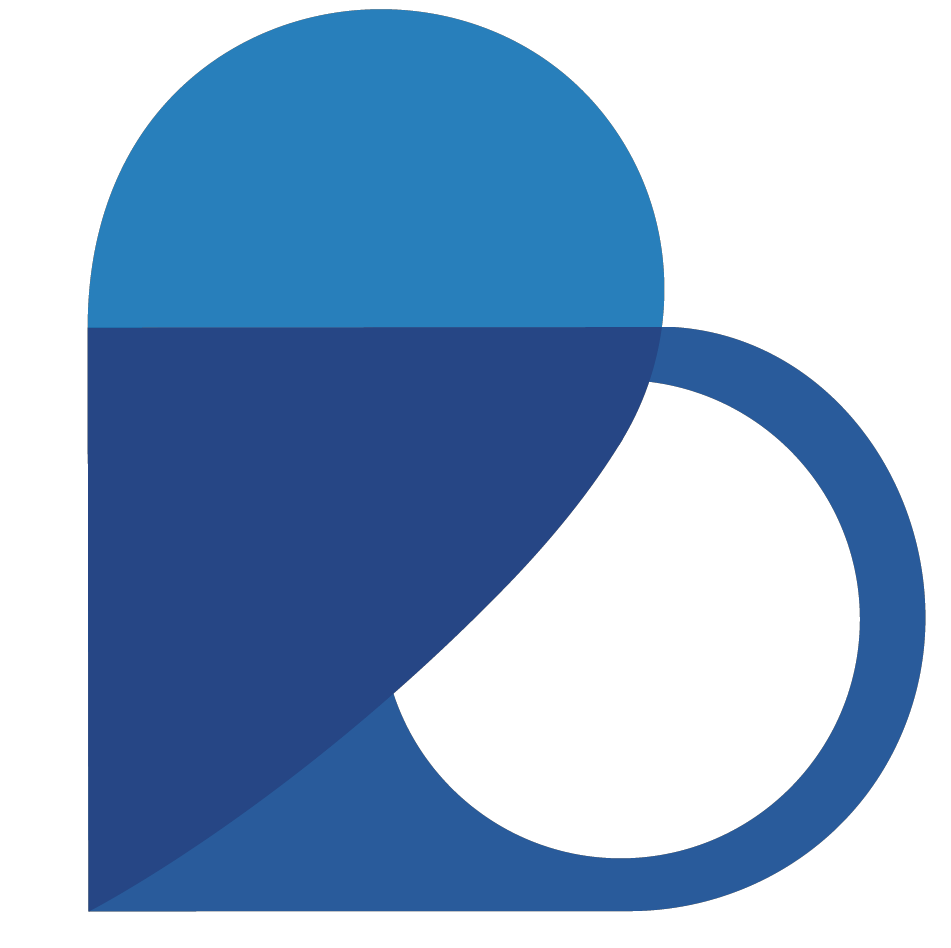

Lo que dicen nuestros clientes
Descubre cómo Jedy Health ha transformado la gestión médica de clínicas y consultorios en toda Venezuela.
Implementaciones exitosas de nuestro software médico ERP
En esta sección, presentamos una lista destacada de empresas que han confiado en nuestras soluciones de software de gestión médica y ERP para clínicas en Venezuela. Nuestra experiencia y compromiso con la excelencia nos han permitido brindar soluciones efectivas que se adaptan a las necesidades específicas de cada cliente.
+3 centros de salud confían en nosotros

Nuestros clientes nos respaldan
Conoce las experiencias de instituciones que han transformado su gestión con Jedy Health

B.O. Medical
Solución implementada: Jedy Health APS
La implementación de Jedy Health APS ha optimizado completamente nuestros procesos administrativos y clínicos. La historia clínica electrónica integrada nos ha permitido brindar una atención más eficiente y segura a nuestros pacientes.
Medymed
Solución implementada: Jedy Health APS
La gestión de pacientes y citas ha mejorado notablemente con Jedy Health. El soporte técnico es excelente y la plataforma es muy intuitiva para todo nuestro personal médico y administrativo.
Más testimonios
La satisfacción de nuestros clientes es nuestra mejor carta de presentación
"La mejor inversión que hicimos para nuestra clínica. La facturación fiscal integrada nos ha ahorrado horas de trabajo."
Dr. Roberto Méndez
Centro Médico Oriental
"El módulo de telemedicina nos permitió seguir atendiendo pacientes durante la pandemia. Una herramienta fundamental."
Dra. María González
Consultorio Médico Integral
"La historia clínica electrónica es increíblemente completa y fácil de usar. Mis pacientes están más satisfechos."
Dr. Carlos Pérez
Cardiocentro Plus
de clientes recomiendan nuestras soluciones
implementaciones exitosas en Venezuela
soporte técnico especializado
Ellos confían en nosotros
Empresas que ya transformaron su gestión
¿Interesado en adquirir alguno de nuestros productos?
Únete a nuestra lista de clientes satisfechos y transforma la gestión de tu institución médica con Jedy Health.
Contactar asesor